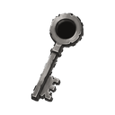
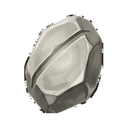
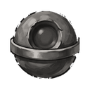
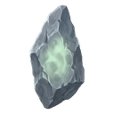
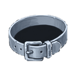
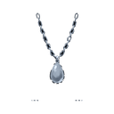

Lanetli Konak D3
ZindanT3Sv 25-30
Giriş anahtarı: 
Yaratıklar
| Yaratık | Seviye | Düşenler |
|---|---|---|
| Bozulmuş Muhafız | Sv 25 |  Yükseltme Taşı T2 Çelik Yüzük T3 Çelik Yüzük T3 |
| Lanetli Rahip | Sv 27 | Yükseltme Taşı T2  Çelik Zindan Çekirdeği |
| Zindan Muhafızı T3 | Sv 30 | Yükseltme Taşı T2  Çelik Küpe T3 Çelik Küpe T3 |
| Zindan Lordu T3 Boss | Sv 30 |  Normal Öz Yükseltme Taşı T2 Çelik Kemer T3 Çelik Zindan Çekirdeği Çelik Kolye T3 |